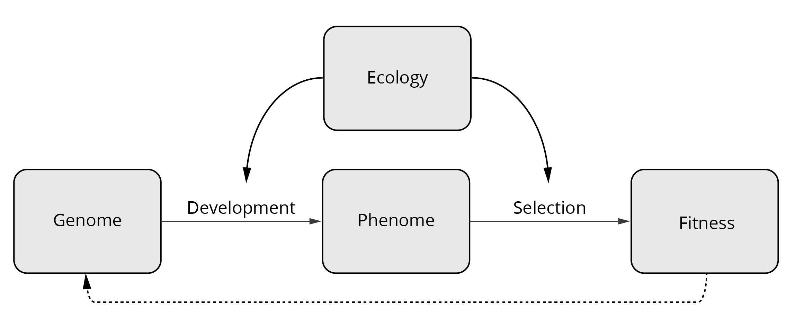
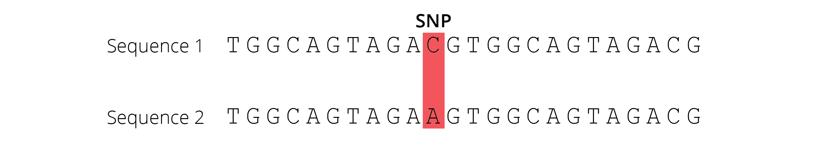

7 Genes, mutation, and genetic variation
DRAFT 20250113
PERSONAL NOTE: first round editing 20241211
So far, we have primarily explored the process of evolution from a phenotypic perspective. We considered how ecological sources of selection impact the survival and reproduction of individuals expressing different heritable traits, and how fitness differences of variants in turn impact the phenotypic composition of subsequent generations. While there is nothing inherently wrong with this approach, it ignores the mechanisms that underlie the expression of phenotypic traits and inheritance. Darwin was also agnostic about these aspects, largely treating what we call “genetics” as a black box. He was unaware of the work of his contemporary, Gregor Mendel, an Augustinian friar that established some of the basic tenets of heredity. It was not until the 1930s and 1940s that genetics and Darwinian evolution were integrated into a unified theory. The fusion of the two fields is known as the Modern Synthesis.
A number of biologists made critical contributions to the Modern Synthesis. Ronald Fisher, Jack Haldane, and Sewall Wright are credited with developing the theoretical basis of population genetics. Theodosius Dobzhansky pioneered evolutionary genetic studies in natural populations, chiefly using Drosophila fruit flies to provide empirical evidence that supported the theoretical developments. Ernst Mayr shaped the modern definition of species and framed critical hypotheses about how speciation occurs. And finally, George Gaylord Simpson integrated findings from paleontology with those in genetics and natural selection.
The Modern Synthesis largely strengthened Darwin’s notion of evolution by closing critical gaps associated with the mechanisms of heredity. This allowed for a more complete and nuanced understanding of evolutionary processes. Rather than just investigating how selection shapes phenotypic variation, a modern view of evolution takes into account how genes and the environment interact to shape developmental and physiological processes that give rise to phenotypic traits of functioning organisms (Figure @ref(fig:beyondphenotype)). The environment also tests phenotypic variants, causing fitness differences that ultimately change the genetic composition of subsequent generations (Figure @ref(fig:beyondphenotype)). In the following chapters, we will explore the genetic basis of evolutionary change and discuss how the many facets of ecology shape trait expression and evolution.
The first task in exploring evolution from a genetic perspective is to establish how genomic variation translates to phenotypic variation. We will then discuss the fundamental sources of genetic variation, how we can quantify such variation in natural populations, and how we can use knowledge of genetic variation to test simple evolutionary hypotheses.
7.1 The Genotype-Phenotype Gap
A common misconception about the origin of novel phenotypic variants is that they are primarily caused by mutations in protein-coding regions of the genome, which change the structure and function of a protein and ultimately create variation in a particular trait. In reality, the ways by which genetic variation can impact phenotypic traits are much more diverse and complex. While technological breakthroughs over the past decades have made it relatively easy to quantify genetic variation across the genome (see below), connecting mutations at particular loci to phenotypic traits has proven much more challenging. We call this the genotype-phenotype gap, and closing this gap is one of the biggest challenges in modern biology.
Part of the complexity arises from the sheer number of genes in a genome. The human genome, for example, consists of over 30,000 genes. More importantly, one-to-one mapping—where one gene causes the expression of a specific phenotypic trait or at least an aspect of it—is relatively rare; rather, genes and their derivative products (different RNAs, proteins, and ultimately metabolites) interact in complex ways, such that the mapping is really many-to-many (many genes affect multiple traits at ones). These complexities become evident when we consider a simple genotype-phenotype framework, such as illustrated in Figure @ref(fig:g2p).

RNA is transcribed from DNA by RNA polymerase, which produces messenger RNAs (mRNAs) that serve as templates for protein synthesis. After transcription, introns are removed by RNA splicing, and alternative splicing can recombine different exons from the same gene, which allows a single gene to code for multiple proteins with different functions. In addition, not all RNAs transcribed from DNA lead to functional proteins. Micro RNAs (miRNA) are short, non-coding RNA molecules that can silence mRNAs, and thus play a role in the post-transcriptional regulation of gene expression. Essentially, miRNAs bind to mRNAs with complementary sequences, which causes those mRNAs to degrade and interrupts the translation of mRNAs into functional proteins. In summary, RNAs play a critical role in multiple processes, not only because they encode templates for protein synthesis, but also because they can regulate the amount of protein produced by other genes.
Similar complexities are also evident at the proteome level. Sometimes, a single type of mRNA gives rise to a functional protein after translation. But many enzymes are actually multi-protein complexes and require information from multiple genes to make one functional unit. A great example are the enzymes associated with the oxidative phosphorylation (OxPhos) pathway in mitochondria, which produce the majority of the ATP needed for maintenance of cellular function. All five OxPhos enzymes are multi-protein complexes, and complex I (NADH dehydrogenase) is composed of 45 subunits, not counting the proteins involved in the assembly of the enzyme. Furthermore, some proteins actually act as transcription factors (TF in Figure @ref(fig:g2p)). These transcription factors bind to transcription factor binding sites (TFbs) in the genome, either enhancing or suppressing the expression of other genes. So proteins are also involved in complex feedback loops that regulate gene expression in response to various internal and external stimuli.
Finally, different enzymes are organized into interconnected pathways that process the metabolites required for the maintenance of organismal function. Figure @ref(fig:metabolism) provides a glimpse at some of the metabolic pathways in human cells. As you can imagine, these metabolic networks are full of redundancy, such that similar phenotypic outcomes may actually be caused by different underlying mechanisms.

It is the action and interaction of biological processes across all of these levels of organismal organization that ultimately shape the phenotypic traits frequently studied by evolutionary biologists. As you can imagine, reconciling evolutionary patterns across these levels is not always trivial, simply because we don’t always know what genes are connected to what traits. In addition, even superficial examination of genotype-phenotype relationships shows that variation in phenotypes can not only arise from variation in protein structure and function, but also differences in when, where, and at what levels proteins are expressed. Phenotypic variants may arise as a consequence of changes in the amino acid sequences of proteins, or changes in the regulation of protein expression. In that light, let’s investigate how different mutations arise in the genome, how they might impact organismal phenotypes, and what their potential evolutionary ramifications are.
Explore more
If you are interested in learning more about what changes in DNA are responsible for the evolution of phenotypic diversity, check out this short essay by Sean Carroll: The Evolution of Gene Regulation and Morphological Diversity. I also recommend his popular science book Endless Forms Most Beautiful: The New Science of Evo-Devo.
7.2 Mutation: The Fundamental Source of Novelty
Mutation is the fundamental source of variation that selection can act upon to create evolutionary change. Any change in the nucleotide sequence of a genome is considered a mutation. Mutations can involve single nucleotide substitutions, insertions and deletions (also called indels), inversions of chromosome segments, duplication of chromosome segments, and partial and complete genome duplications. Different types of mutations have different molecular origins and different consequences for the expression of phenotypic traits. Consequently, they also have different evolutionary implications.
Definition: Mutation
A mutation is a change in DNA sequence, resulting in a variant form (allele) that can be passed on to subsequent generations.
7.2.1 Point Mutations
Point mutations are changes in a single nucleotide of DNA. They include transitions and transversions that cause single nucleotide substitutions as well as single nucleotide insertions and deletions. Point mutations cause single nucleotide polymorphisms (SNPs; single base-pair differences in the DNA sequence), which are the basis for many population genetic analyses.
Origins
Point mutations primarily arise from mistakes during DNA replication. The mutations are either caused by random errors made by DNA polymerase (which copies the DNA during replication) or by random errors made by enzymes involved in DNA repair.
Phenotypic Impact and Evolutionary Consequences
The phenotypic impacts and evolutionary consequences of point mutations depend on the location and nature of the mutation.
In protein-coding regions of the genome, single nucleotide substitutions can either be synonymous (silent) or nonsynonymous. Synonymous mutations arise due to redundancy of the genetic code, where multiple nucleotide triplets encode for the same amino acid (Figure @ref(fig:geneticcode)). For example, a mutation from AGG to AGA has no effect on the resulting amino acid sequence, because both triplets encode for arginine. Since such synonymous mutations do not translate to changes in the resulting protein, there are no consequences for expressed phenotypes and the mutation is not visible to selection (i.e., it has no fitness consequences).
In contrast, nonsynonymous substitutions do change the amino acid sequence of the resulting protein (e.g., AGG to AGT changes arginine to serine; @ref(fig:geneticcode)). Amino acid substitutions can fundamentally change the structure and function of proteins, with corresponding consequences for downstream phenotypes. There are three potential evolutionary consequences of nonsynonymous substitutions: (i) the altered protein and resulting phenotypic changes are deleterious, imposing a fitness disadvantage for the individual; (ii) the altered protein and resulting phenotypic changes are beneficial, providing a fitness advantage for the individual; or (iii) the altered protein does not change its structure and function in a significant way, in which case even a nonsynonymous mutation can be selectively neutral.
Protein-coding regions of the genome can also be impacted by indels. Single nucleotide indels are known as frameshift mutations, because they alter the reading frame at which nucleotide triplets are translated into amino acids. Consequently, an insertion or a deletion of a single nucleotide can completely change the amino acid sequence of the resulting protein or introduce a premature stop codon (Figure @ref(fig:frameshift)). Many frameshift mutations cause loss of function in a protein and consequently lead to fitness reductions in individuals carrying the mutation.
Protein-coding regions only make up about 1 % of the human genome (and even less in some other organisms). Point mutations can also occur in non-coding genomic regions. Some non-coding regions serve important functions in gene regulation (e.g., transcription factor binding sites, non-coding RNAs) or in mRNA processing and protein translation (e.g., introns). Hence, point mutations in such genomic regions may still impact organismal phenotypes, and—depending on the context—they can come with fitness costs or benefits.
Finally, putatively non-functional genomic regions (pseudogenes and repeat sequences caused by transposons and retrotransposons) can make up large portions of a genome. Point mutations in these genomic regions largely have no fitness consequences; hence, they tend to be selectively neutral.
7.2.2 Inversions
Inversions are regions of chromosomes that are flipped in direction. These mutations do not change the amount or kind of genetic material in the genome, only its sequential arrangement (Figure @ref(fig:inversion)).
Origins
Inversions are caused by double DNA breaks, in which the broken central piece is flipped before the DNA strands are joined back together by DNA ligase. While inversions can be only a few base pairs long (in which case they can act like point mutations), some are very large (>4 megabases) and contain multiple functional genes.
Phenotypic Impact and Evolutionary Consequences
If the break points are located within a functional gene, inversions can cause the loss of function and corresponding negative impacts on phenotypic expression and fitness. In most cases, however, break points are located in intergenic regions, such that inversions have no visible phenotypic repercussions. Nonetheless, inversions can play an important role in evolution, especially if they contain multiple functional genes. In heterozygous individuals that have one copy of the chromosome with and one without the inversion, the likelihood of recombination within the inversion is reduced because of mechanical pairing issues associated with non-complimentary DNA. As a result, genes within an inversion are often inherited in blocks and have a reduced chance to be reshuffled during sex and recombination.
7.2.3 Gene Duplication
Gene duplication occurs when entire segments of a chromosome containing functional genes are duplicated, creating novel copies in the genome.
Origins
Most gene duplications arise from unequal crossing-overs during meiosis, where misalignment of homologous chromosomes leads to daughter chromosomes of different lengths. One daughter chromosome contains a duplicated segment that is missing from the other (Figure @ref(fig:uneqcross)). Gene duplications can also be associated with replication slippage and retrotransposon activity.

Phenotypic Impact and Evolutionary Consequences
Individuals that inherit a chromosome with a deleted essential gene may suffer from negative phenotypic and fitness effects. Those that inherit a chromosome with a duplication, however, are unlikely to suffer from adverse consequences. There are two possible evolutionary consequences for the genes within a duplication. First, a duplicated gene may accumulate a variety of mutations, even deleterious ones. But since a functional copy is still present in the genome, individual carriers will not face any fitness reductions. As deleterious mutations accumulate in the duplicated gene, it will eventually become a non-functional pseudogene. These pseudogenes are passed on across generations, as discussed in Chapter 2. Alternatively, a duplicated gene may accumulate mutations that change the structure and function of the resulting protein in a beneficial way, enhancing the fitness of the carrier. As such, gene duplication can be a major source of genomic novelty, and many gene families have arisen through duplication.
Hemoglobin genes, for example, have duplicated repeatedly during vertebrate evolution. Different hemoglobin genes in the human genome vary in their functional properties and expression depending on developmental stage or environmental conditions. Hemoglobins expressed during fetal development have a higher oxygen affinity than the mother’s hemoglobin, allowing the fetus to extract oxygen from the mother’s blood. Similarly, our bodies express different types of hemoglobins during acclimation to low oxygen concentrations at high altitudes. Shifting to the expression of alternative hemoglobins takes time, which explains why you may experience altitude sickness on the first days of your Colorado vacation. Once you are acclimated, the higher oxygen binding capacity of alternative hemoglobins allows you to perform normally even at higher altitudes, which is why some athletes use high-elevation training to gain an advantage for competitions close to sea level. Consequently, gene duplication is an important source of novelty in the genome and allows for the evolution of specialized functions that are constrained by the number of loci.
7.2.4 Genome Duplication
Genome duplications occur when additional copies of the entire genome are generated, leading to polyploidy. In some instances, genome duplications can be partial, if only a subset of chromosomes are duplicated.
Origins
Partial and complete genome duplications occur because of segregation errors during meiosis. Non-disjunction during the anaphase of meiosis I or II leads to a failure of correct chromosome separation into daughter cells, resulting in gametes with extra or missing chromosomes.
Phenotypic Impact and Evolutionary Consequences
Whole genome duplications do not typically have immediate negative consequences for the carrier. Like gene duplication, it may actually allow for the evolution of novel genes, because they release constraints associated with pleiotropic effects. However, polyploids are instantaneously reproductively isolated from their ancestors, because proper meiosis is not possible with an uneven number of sister chromosomes. Hence, we see polyploid lineages more commonly in organisms with asexual reproduction or self-fertilization, like plants. In these cases, polyploidization is associated with instantaneous speciation.
In contrast, partial genome duplications often have negative fitness consequences for the carrier. This is thought to be related to gene dosage effects, where the amount of gene product (e.g., protein) is correlated with the number of copies of a particular gene in the genome. Hence, partial genome duplication can lead to biases in the expression of some—but not all—genes, creating imbalances in the developmental and metabolic networks that have been fine-tuned by evolution.
7.3 Mutation Rates
Point mutations are by far the most common mutations in the genome. Estimation of mutation rates is not trivial, and estimates vary depending on how these rates are actually quantified. The earliest estimates came from experimental mutation accumulation lines, where mutation rates were estimated based on visible phenotypic mutations that were likely caused by loss of function mutations (e.g., premature stop-codons, frame-shift mutations, etc.). These experiments estimated mutations rates per genome per generation, and revealed values between 0.0025 in E. coli and 1.6 in humans (Table 4.1).
The 640-fold variation in the organisms listed in Table 4.1 is primarily caused by two factors. Per-genome mutation rates roughly scale with genome size; larger genomes tend to have have a higher likelihood of accruing copy errors. More importantly, however, mutation rates are higher in multicellular organisms. In unicellular organisms, every round of DNA replication represents a new generation. In contrast, mutations also occur during mitosis as multicellular bodies develop. Any mutation within the germ line will be passed on to the next generation.
| Taxon | Mutation rate (per genome per generation) |
|---|---|
| Escherichia coli | 0.0025 |
| Saccharomyces acidocaldarius | 0.0018 |
| Saccharomyces cerevisiae | 0.0027 |
| Caenorhabditis elegans | 0.0360 |
| Mus musculus | 0.9000 |
| Homo sapiens | 1.6000 |
While these mutation rates seem small, it is important to remember that a population typically consists of many genomes (i.e., individuals). For example, an industrial batch of beer is estimated to harbor about 100 billion (1011) yeast cells. Given a mutation rate of 0.0027 (Table 4.1), that includes 270 million (2.7*108) mutations. Considering that yeast has a genome size of about 12 Mb (1.2*107 base pairs), that means that every nucleotide in the genome might mutate up to 20 times in every generation. You can conduct the same calculation with humans (population size: 7.9 billion; genome size: 3.2*109 base pairs), and you will find that every nucleotide may mutate about twice in each generation. So while the likelihood for a particular mutation to occur in an individual is very small, the mutational input—especially in large populations—can be considerable.
More importantly, mutation rate estimates based on mutation accumulation experiments vastly underestimate actual mutation rates. As discussed above, many mutations have no or only minute phenotypic effects, and are thus impossible to detect during phenotype screens. Unsurprisingly, mutation rate estimates based on DNA sequencing have revealed much higher mutation rates. For example, the rate of nucleotide substitutions in humans is estimated at about 1 in 108 in every generation. Extrapolated for the size of the human genome, this means that every gamete produced exhibits about 30 mutations.
7.4 Quantifying Genetic Variation
As mutation continuously introduces new genetic variation into a population’s gene pool, biologists want to quantify the distribution and changes in genetic variation across generations. With the massive improvements of DNA sequencing technologies over the past two decades, we can now directly sequence partial or whole genomes to detect single nucleotide polymorphisms (SNPs; Figure @ref(fig:snps)) that are the consequence of point mutations.

Explore More
If you are interested in learning more about modern DNA sequencing technologies, check out the review paper by Sara Goodwin and colleagues: Coming of age: ten years of next-generation sequencing technologies.